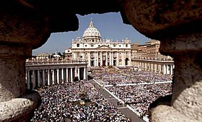
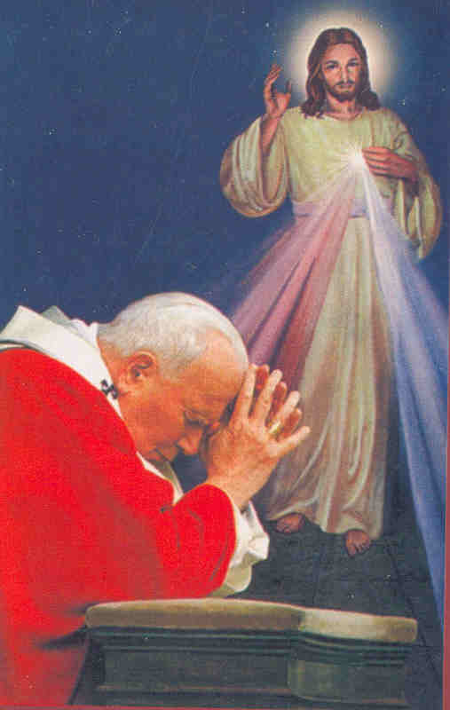

PREFÁCIO
A humanidade
sempre se revelou heterogênea quanto ao comportamento, o 
Os indiferentes e os cristãos vacilantes cresceram em número e uma grande maioria deles, envolvidos pela “onda da comodidade pessoal e do prazer”, consideraram rígidos e excessivos os padrões do catolicismo e foram em busca de um “Deus mais fácil”. Centenas de religiões surgiram e se expandiram, querendo oferecer aos seus seguidores uma condição espiritual mais benéfica e mais vantajosa! As famílias realmente constituídas estão perplexas e permanecem pasmas e abismadas, diante da evolução progressiva do mal que se dissemina livremente! O caos moral e espiritual mergulhou a sociedade humana num abismo tão profundo, que nem se consegue delinear no panorama geral algum tipo de reação eficaz, que não seja a salvadora intervenção Divina.
E ela veio, não pela força e nem pelo incomensurável poder de DEUS, mas pelo Amor e a Bondade. O SENHOR apesar de terrivelmente ofendido pelo abandono e a indiferença de seus filhos, dilacerou as Suas próprias entranhas para arrancar de Suas profundezas insondáveis, uma extremosa providência para a salvação do mundo. ELE disse a Irmã Faustina: “Sou o Amor e a própria Misericórdia”. (Diário parágrafo 1273 – página 331) O SENHOR quer liberta-nos do maligno, acabar com as guerras, a matança programada, as tramas e os escândalos de todas as formas e naturezas, mesmo que seja necessário “ELE remover os véus que cobrem a eternidade feliz”, a fim de não deixar ninguém desconhecer a grandeza de Seu Amor, a dimensão de Sua Divina Bondade e a sua infinita Misericórdia. ELE disse a Irmã Faustina: “A humanidade não encontrará paz, enquanto não se voltar com confiança para a Misericórdia Divina”. (Diário parágrafo 300 – página 111)
E assim, através de uma simples e humilde religiosa, de pouca instrução, mas de um imenso amor e de uma confiança sem limites em DEUS, foi confiada uma grande e preciosa missão: a Mensagem da Misericórdia dirigida a todo o mundo. Disse o SENHOR JESUS: “Hoje estou enviando-te a toda humanidade com a Minha misericórdia. Não quero castigar a sofrida humanidade, mas desejo curá-la estreitando-a ao MEU misericordioso CORAÇÃO”. (Diário parágrafo 1588 – página 403)
“És a Secretária da Minha misericórdia. EU te escolhi para essa função nesta e na outra vida”. (Diário parágrafo 1605 – página 408) “...é teu dever e tua missão em toda a tua vida dar a conhecer às almas a grande misericórdia, que tenho para com elas, e animá-las à confiança no abismo da Minha misericórdia”. (Diário parágrafo 1567 – página 398)
A Misericórdia Divina é uma verdade de fé já conhecida á muitos séculos, mas bastante esquecida, embora essencialmente necessária a nossa vida, porque se refere ao Amor misericordioso do SENHOR por toda humanidade. Se não fosse a Misericórdia Divina, ninguém alcançaria a salvação, por que não temos a necessária santidade para consolar e desagravar o SENHOR, por causa dos nossos muitos pecados. Mas DEUS Misericordioso aceita todos os nossos esforços e orações, preservando-nos da condenação eterna. Então a Misericórdia Divina é um atributo de DEUS essencial a salvação da humanidade. No Novo Testamento, JESUS nos ensina que o homem não só recebe e experimenta a misericórdia de DEUS, mas é também chamado a ter misericórdia para com o próximo: “Bem-aventurados os misericordiosos, porque alcançarão misericórdia”. (Mt 5, 7) e também em São Mateus (Mt 9, 13) o SENHOR confirma que DEUS prefere os sentimentos íntimos de um coração sincero e compassivo, quando afirma: “Misericórdia é que EU quero, e não sacrifício. Com efeito, EU não vim chamar justos, mas os pecadores". Também em São Lucas: “Sede misericordiosos, como o Vosso PAI é misericordioso”. (Lc 6, 36) NOSSO SENHOR descortina a imensidão de Seu Divino CORAÇÃO MISERICORDIOSO que quer abrigar todos os seus filhos que O amam, concedendo-lhes carinho, amor e a salvação eterna.
E agora, ampliando a divulgação da Sua Divina Misericórdia para todos os povos, através da Irmã Maria Faustina Kowalska ELE instituiu diversos recursos admiráveis, para facilitar as pessoas alcançarem os Seus benefícios e graças. Através destes recursos JESUS concede alívio aos males do corpo e da alma, inspira melhores soluções as dificuldades diárias, favorece e concretiza a conversão do coração, além de proporcionar as almas do Purgatório, um bálsamo seguro que encurta e apressa a chegada definitiva ao Paraíso Divino. Com este objetivo o SENHOR criou: a “Hora da Misericórdia”, o “Terço da Misericórdia”, a "Novena da Misericórdia" e a “Festa da Misericórdia”.
Mas o SENHOR recomendou: “Este é um sinal para o Fim dos Tempos, depois virá o Dia da Justiça. Enquanto há tempo, divulgue para que todos tenham acesso aos recursos da fonte de Minha Misericórdia, deixe-os se beneficiarem com o Sangue e a Água que derramei para eles.” (Diário parágrafo 848 - página 243 – 25 de Dezembro de 1936)
E, sobretudo, o SENHOR preveniu: “Almas perecem apesar de Minha amarga Paixão. Estou lhes dando a última esperança de salvação, ou seja, a Festa de Minha Misericórdia. Se eles não adorarem a Minha Misericórdia, perecerão por toda eternidade. Secretária de Minha Misericórdia (Irmã Faustina)escreva tudo isto, conte as almas sobre a Minha Grande Misericórdia, porque o dia terrível, o Dia da Minha Justiça está próximo”. (Diário parágrafo 965 – página 271 - 17/02/1937)
E repetiu no dia 28 de Fevereiro de 1937: “Desejo que Minha Misericórdia seja louvada. Estou dando a humanidade à última esperança de salvação, através do recurso de Minha Misericórdia. Meu CORAÇÃO se alegra com esta Festa”. (Diário parágrafo 998 – pagina 276)
Então, trata-se de um assunto
extremamente atual e importante, relacionado diretamente
com a vida 
O Papa João Paulo II, na sua homilia da Santa Missa no dia 30 de Abril de 2000, quando a Irmã Faustina foi Canonizada disse: “O que nos trarão os anos que estão diante de nós? Como será o futuro do homem sobre a Terra? A nós não é dado sabê-lo. Contudo, é certo que ao lado de novos progressos não faltarão, infelizmente, experiências dolorosas. Mas a luz da Misericórdia Divina, que o SENHOR quis como que entregar de novo ao mundo através do carisma da Irmã Faustina, iluminará o caminho dos homens do terceiro milênio”.
“Assim como os Apóstolos outrora, é necessário, porém que também a humanidade de hoje acolha no cenáculo da história o CRISTO ressuscitado, que mostra as feridas da sua crucifixão e repete: A paz seja convosco! É preciso que a humanidade se deixe atingir e penetrar pelo ESPÍRITO que CRISTO ressuscitado lhe dá. É o ESPÍRITO que cura as feridas do coração, abate as barreiras que nos separam de DEUS e que nos dividem, restituindo ao mesmo tempo a alegria do Amor do PAI ETERNO e da unidade fraterna”.
“A canonização da Irmã Faustina tem uma eloquência particular: mediante este ato quero transmitir a todos os homens para que aprendam a conhecer sempre melhor o verdadeiro rosto de Deus e o genuíno rosto dos irmãos”.
“Amor a Deus e amor aos irmãos são de fato inseparáveis. Com efeito, não é fácil amar com um amor profundo, feito de autêntico dom de si. Aprende-se este amor na escola de DEUS, no calor da sua caridade. Ao fixarmos o olhar NELE, ao nos sintonizarmos com o Seu CORAÇÃO de PAI, tornamo-nos capazes de olhar os irmãos com novos olhos, em atitude de gratuidade e partilha de generosidade e perdão. Tudo isto é misericórdia”!
“Na medida em que a humanidade souber aprender o segredo deste olhar misericordioso, manifesta-se como perspectiva realizável a misericórdia do SENHOR”.
NOSSO SENHOR disse a Irmã: “Meu Amor e Minha Misericórdia não conhecem limites”. (Diário parágrafo 718 – página 215)
Objetivando colaborar de alguma forma para que a Vontade do SENHOR seja mais conhecida e a Misericórdia Divina seja derramada torrencialmente sobre todos os corações, o APOSTOLADO DOS SAGRADOS CORAÇÕES construiu este Site, para realçar a grandeza impressionante e benéfica da Misericórdia de DEUS, apresentando os principais acontecimentos na Vida da Irmã Faustina, seguindo a cronologia dos fatos conforme o seu DIÁRIO. Aqui, evidenciamos sobretudo, os seus encontros com JESUS, com NOSSA SENHORA, o seu Anjo da Guarda, a SANTÍSSIMA TRINDADE, os notáveis dons que ela recebeu e as mensagens e revelações em benefício da humanidade, que ela anotou em seis cadernos reunidos num livro de quase 500 páginas. Esta verdade já está divulgada amplamente em todo o mundo. Aqui no Brasil, o Diário da Irmã foi editado pela Congregação dos Padres Marianos de Curitiba, Estado do Paraná, e é comercializado pelas Edições Paulinas, sob o título: “DIÁRIO - Santa Maria Faustina Kowalska (A Misericórdia Divina na minha alma)”.
APOSTOLADO DOS SAGRADOS CORAÇÕES
http://www.apostoladosagradoscoracoes.com/